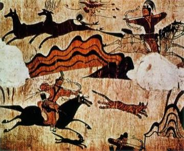
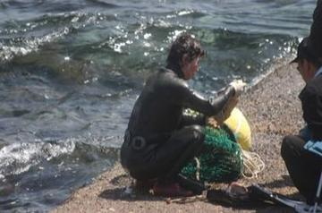
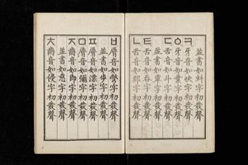
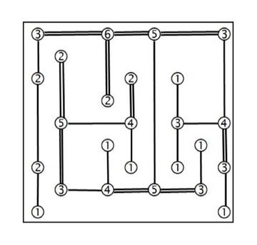
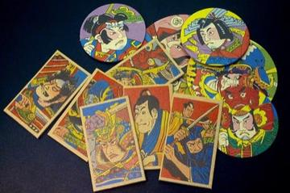
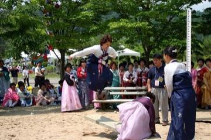
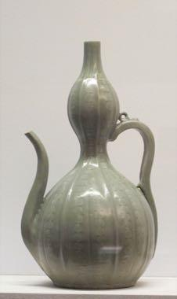
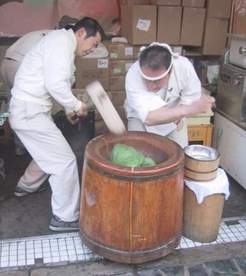
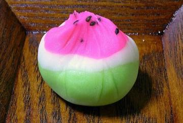
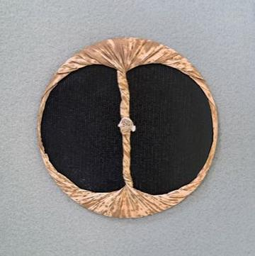

Cradle of culture
Japan and Korea
The island and peninsula traditions of Northeast Asia.
Deep Past and First Games 2
River Valleys and First Cities 5

E-sugoroku
Japan · Board and table games
Goguryeo Mural Restoration
South Korea +1 · Puzzles and mind games
Ssireum
South Korea · Wrestling and martial sports
Sumo bout
Japan · Wrestling and martial sportsYut Nori
South Korea +1 · Board and table games
Classical Worlds 6


Crossroads and Golden Ages 8

Dalgona
South Korea · Dexterity and skill games
Four-Field Kono
South Korea · Board and table games
Tsugaru Shamisen
Japan · Musical instrumentsGomoku and Renju
Japan · Board and table gamesHasami shogi
Japan · Board and table gamesJanggi
South Korea +1 · Board and table gamesRiichi mahjong
Japan · Board and table gamesShogi
Japan · Board and table games
Age of Contact and Craft 3

Fukuwarai
Japan · Puzzles and mind games
Hanetsuki
Japan · Racing
Sangaku Geometry Puzzles
Japan · Puzzles and mind games
Modern Heritage 16

Amidakuji
Japan · Puzzles and mind games
Daruma Otoshi
Japan · Puzzles and mind games
Haenyeo Breath Dive
South Korea · Dexterity and skill games
Hangul syllable blocks
South Korea · Puzzles and mind games
Hashi
Japan · Puzzles and mind games
Kamishibai
Japan · Puzzles and mind games
Kingyo-sukui
Japan · Dexterity and skill games
Menko
Japan · Dexterity and skill games
Neolttwigi
South Korea · Street and playground games
Otedama
Japan · Dexterity and skill games
Takoyaki-style ball flipping
Japan · Dexterity and skill games
Tatami room tiling puzzle
Japan · Puzzles and mind games
Yukigassen Snow Fort
Japan · Water and winter sportsJegichagi
South Korea +1 · Street and playground gamesKendama
Japan · Dexterity and skill gamesTuho
South Korea · Dexterity and skill games
Living Traditions 19

Bojagi
South Korea · Crafts and making
Furoshiki
Japan · Crafts and making
Goryeo Celadon Inlay
South Korea +1 · Crafts and makingHanabi
Japan · Other traditions
Ikebana
Japan · Crafts and making
Karesansui
Japan · Crafts and making
Kokeshi doll painting
Japan · Crafts and making
Kumihimo Braid Disk
Japan · Crafts and making
Kumiko lattice
Japan · Crafts and makingLeaded Glass Window Making
Japan · Crafts and making
Lost-Wax Bronze Casting
Japan +2 · Crafts and making
Maedeup
South Korea · Crafts and making
Mochitsuki
Japan · Performance and storytelling
Nerikiri wagashi sculpting
Japan · Crafts and making
Paper Plane Flight Contest
Japan · Crafts and making
Sashiko Stitch Patterns
Japan · Crafts and making
Shibori Indigo Fold
Japan +1 · Crafts and making
Temari Thread-Ball Patterns
Japan · Crafts and making
Ukiyo-e Woodblock Printing
Japan · Crafts and making